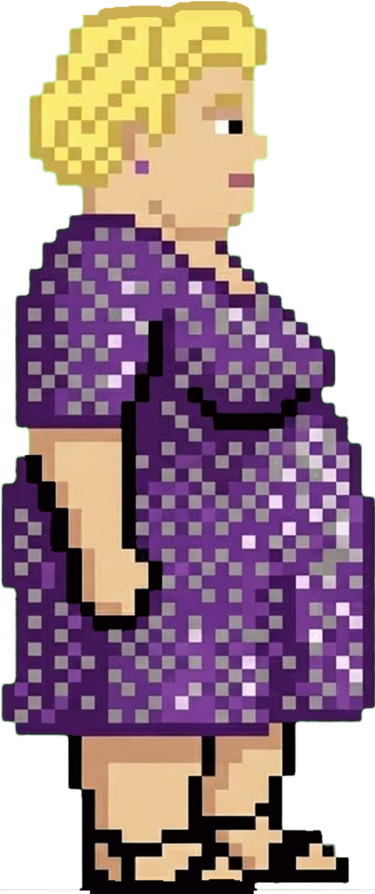
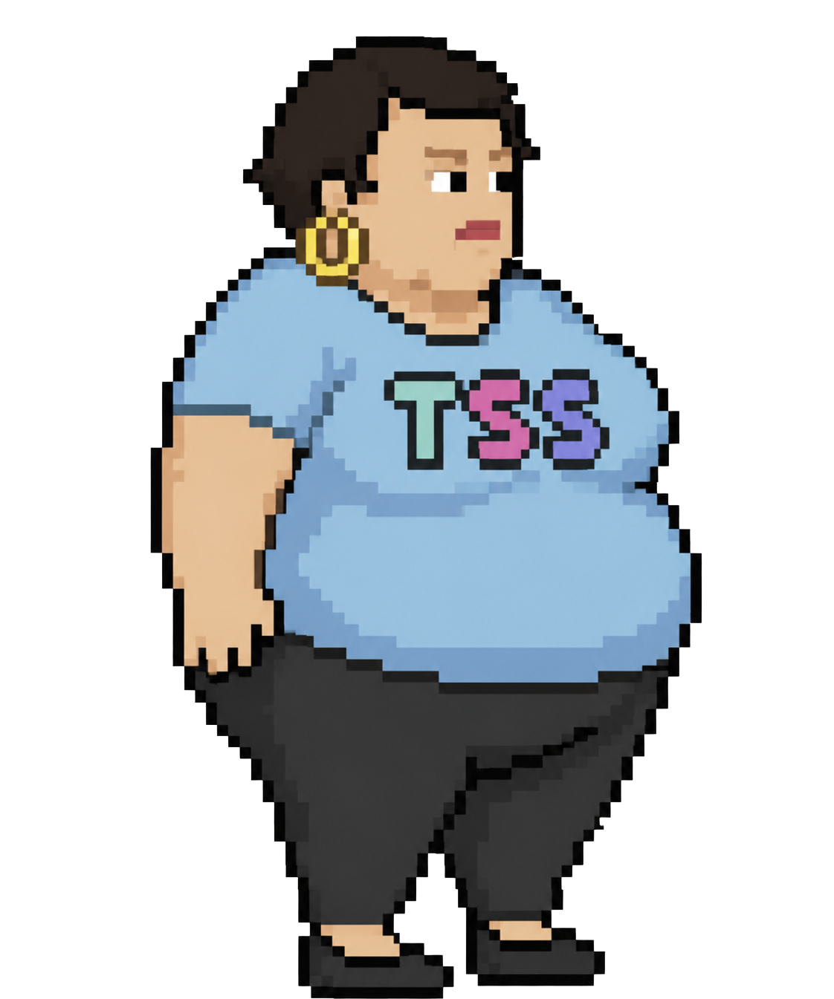

Kloda Classic
Fioletowa sukienka
Cena: 0 kcalUwaga uwaga
Grasz we wczesną, rozwojową wersję Odysei Wolbromskiej. Oznacza to, że część mechanik, poziomów, przeciwników, animacji i balansu może jeszcze działać dziwnie, wyglądać roboczo albo zachowywać się tak, jakby sama gra też potrzebowała paska głodu. Błędy, glitche, niedoróbki i absurdalne sytuacje są na tym etapie spodziewane. Finalna wersja gry może znacząco różnić się od obecnej - zarówno wizualnie, jak i gameplayowo. Wszelkie sugestie można zgłaszać albo w DM na Instagramie: @wszs.volbrom lub mailowo: wszs.volbrom@proton.me
V 0.5.026052026-2 NIGHTLY
Zbieraj pyszności. Zabierz Wolbrzymkę do Dupaju.
Cheats (debug only)
@wszs.volbrom - From patostream to platformer.
Gra zatrzymana.
Loading
Przygotowywanie assetów...
Zanim ruszysz
Na telefonach i tabletach możesz grać przyciskami ekranowymi. Jeśli ich nie widzisz, sprawdź opcję „Przyciski ekranowe” w ustawieniach.
LEVEL 2-4
Wszystko zaczęło się niewinnie...
W McDonald’s spojrzał Ci w oczy, zamówił Zestaw Powiększony i wyznał miłość.
A potem?
Nie odpisał.
Nie wyświetlił.
Nie dał prezentu.
Nawet nie zareagował na relację.
Dogoń go, przeskakuj przeszkody, zbieraj pyszności i nie pozwól mu uciec!!
CEL: ZŁAP TWINKA, ZANIM ZNIKNIE Z TWOJEGO ŻYCIA JAK PROMOCJA W MAKU.
EXPERIMENTAL
Saldo: 0 kcal

Fioletowa sukienka
Cena: 0 kcal
Niebieski drip
Cena: 12000 kcal